Экскурсии · Хэйхэ
Даосский храм Гуаньди
«Храм Небожителей», или Луншоу Шань — каскадный храмовый ансамбль на склоне большой сопки в 12 км от центра города.
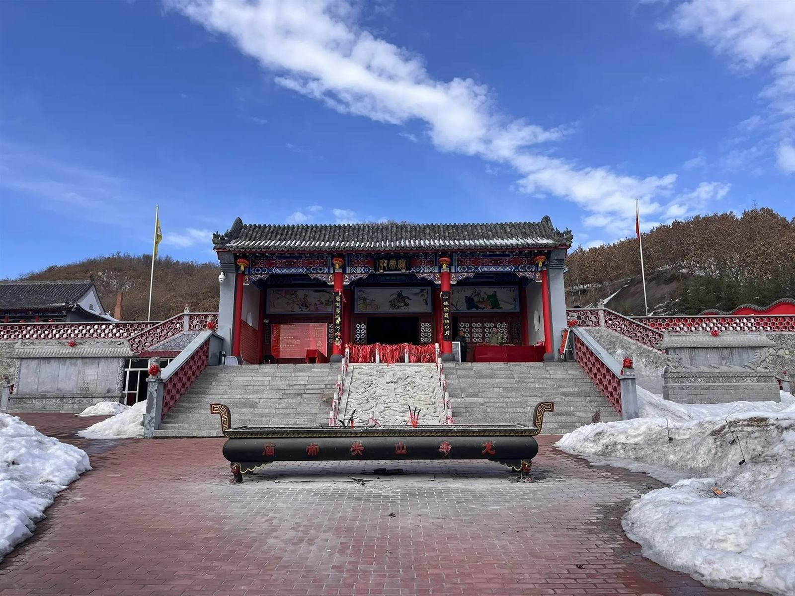
Даосская традиция
Храм, раскинувшийся прямо на склоне сопки.
Приблизительно в 12 километрах к западу от центра города расположен даосский храм Гуаньди, также известный как «Храм Небожителей», или Луншоу Шань. Это место заметно отличается от буддийского храма Цзиньфасы, так как принадлежит к совсем иной философской и религиозной традиции.
Храм раскинулся прямо на склоне большой сопки, и эта особенность сразу бросается в глаза: его постройки спускаются каскадом, создавая гармоничный и живописный архитектурный ансамбль. Хотя Луншоу Шань — постройка относительно новая, его создатели с большим уважением воспроизвели черты классических даосских святилищ, так что он вполне передаёт атмосферу древности.
Что важно знать
Традиции и особенности посещения храма.
- Уже у входа можно заметить традиционных львов-стражей, а переступая порог, важно не наступать на него, а почтительно перешагнуть — это знак уважения к святыне
- Духовная жизнь в храме сосредоточена вокруг постижения даосизма — учения, которое уходит корнями в труды мудреца Лао Цзы и его знаменитую книгу о Дао и Дэ
- Внутри посетителей окружают статуи различных божеств, и у каждой из них можно заметить приношения — так верующие показывают своё почтение
- На площади храмового комплекса есть башня желаний: для исполнения самого заветного нужно кинуть монетку в башню так, чтобы она оттуда не выпала
- Вход в храм бесплатный, можно оставить пожертвование
- Добираться до Луншоу Шань придётся на такси, так как рядом нет остановок общественного транспорта
Фотографии
Каскадный ансамбль храма Гуаньди в разное время года.
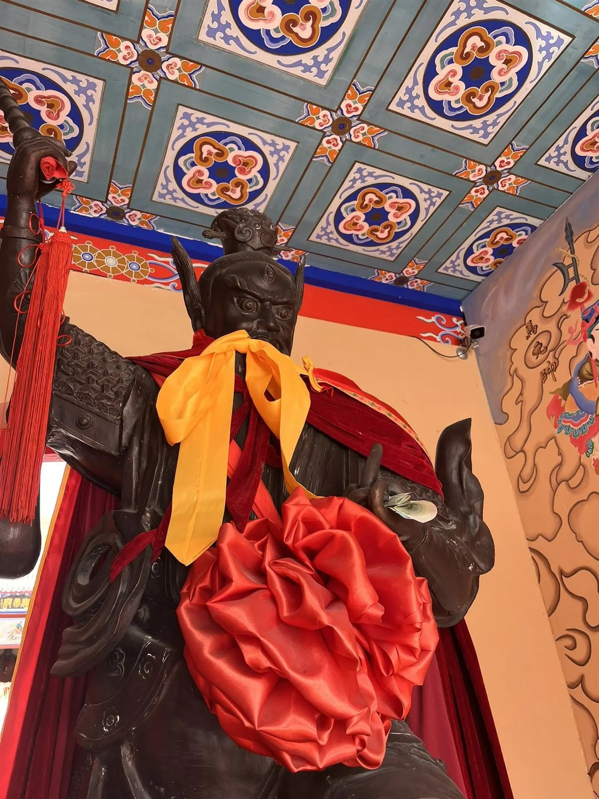
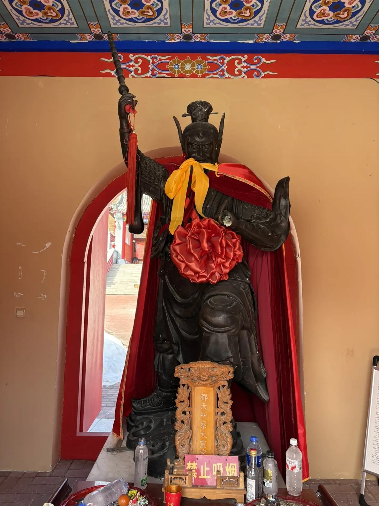
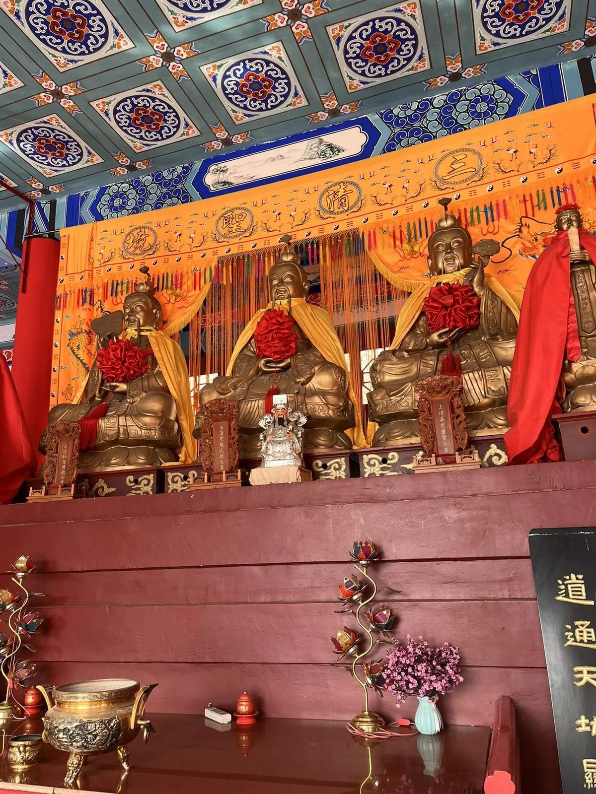
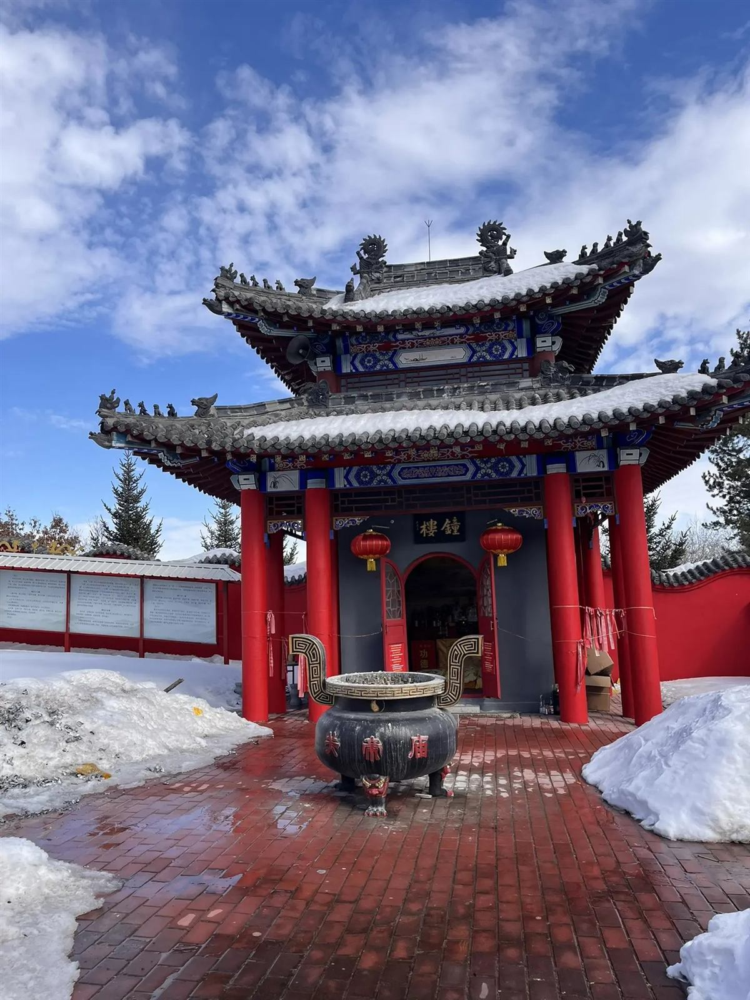
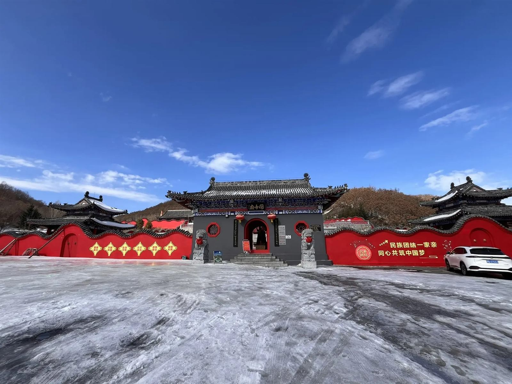
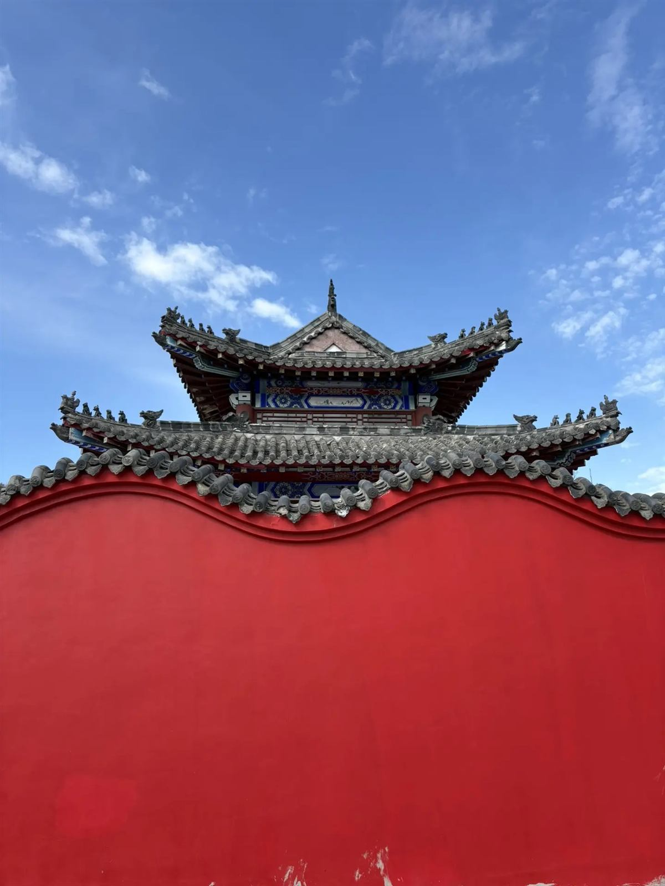
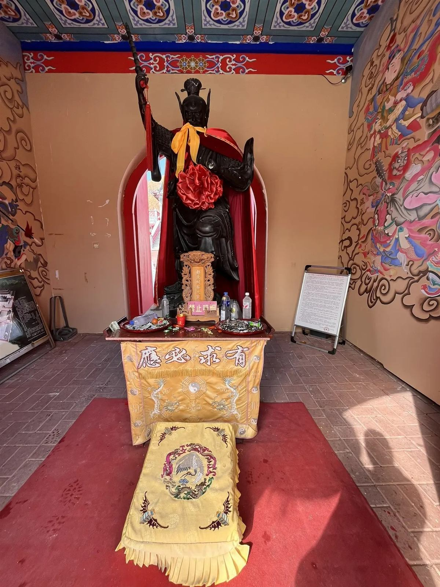
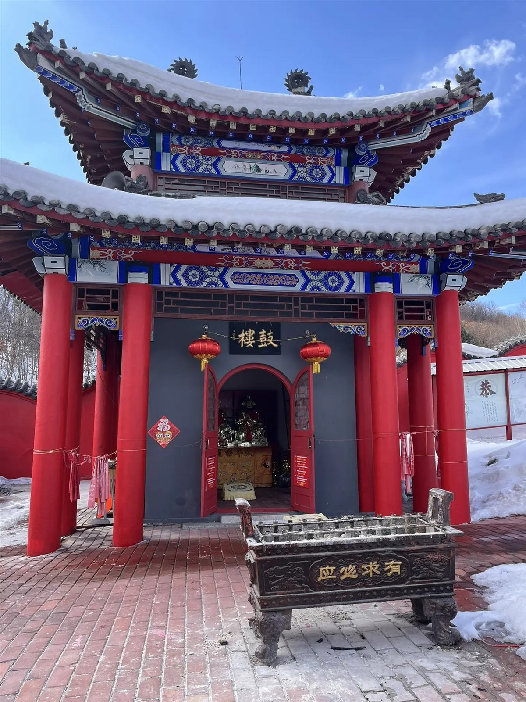
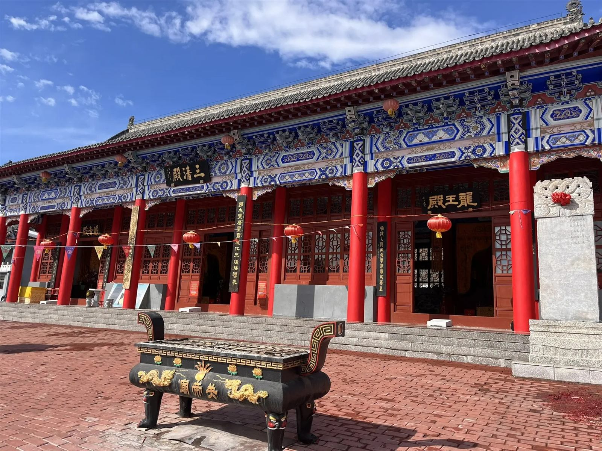
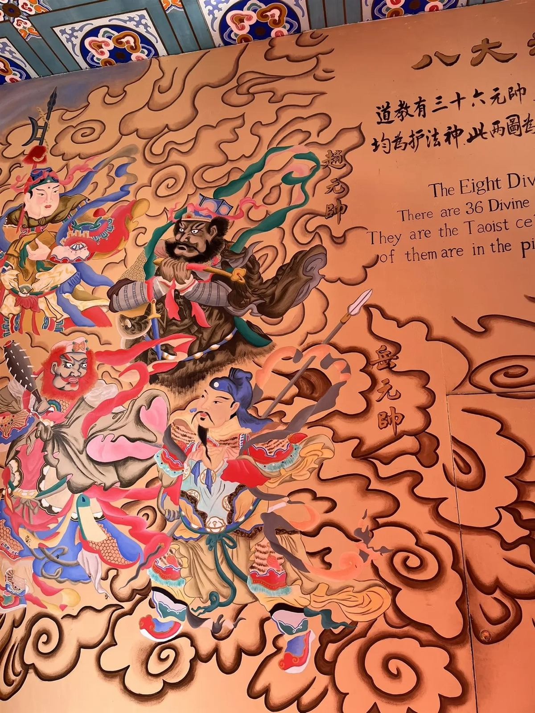
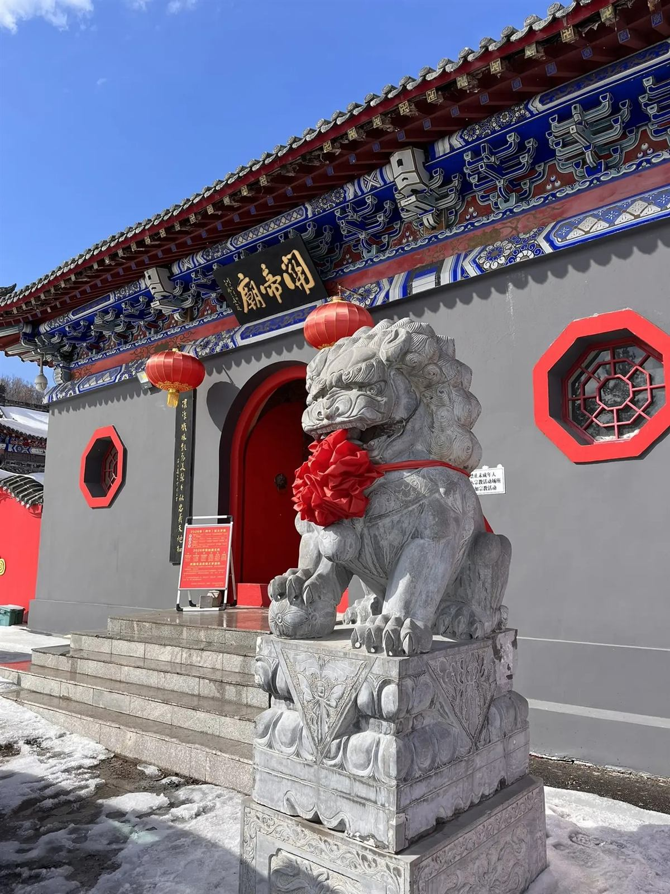
Экскурсионная программа